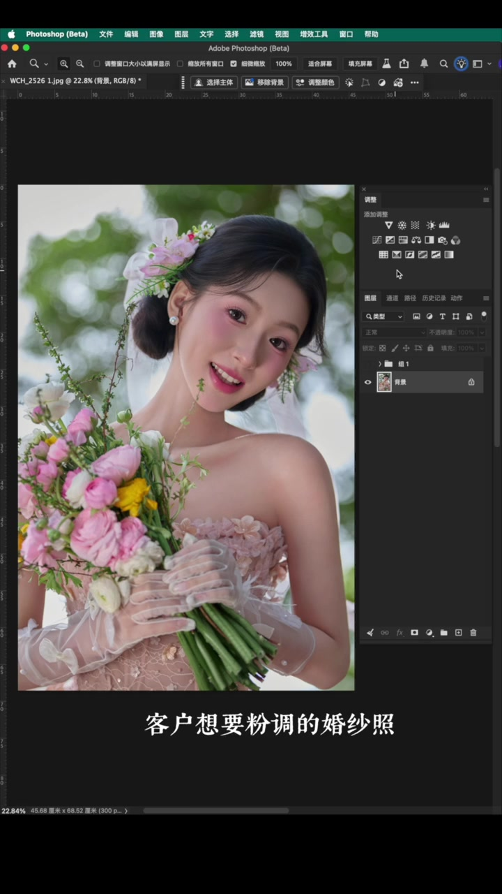
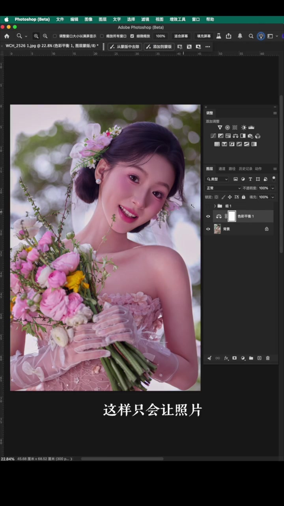
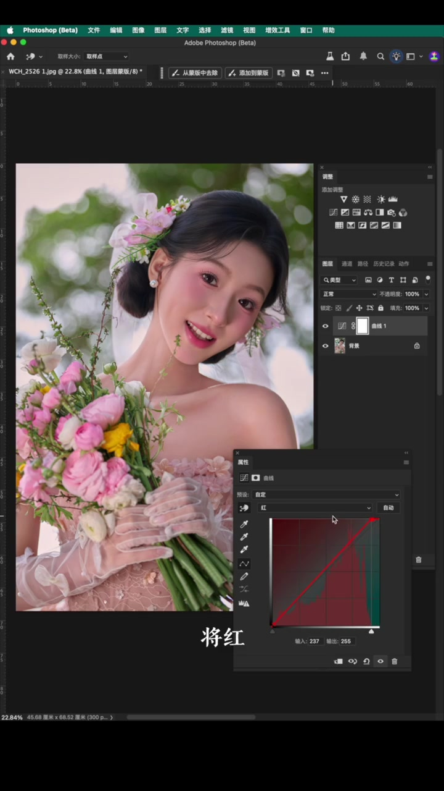
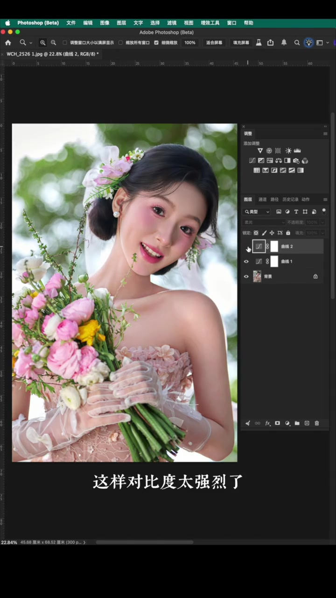
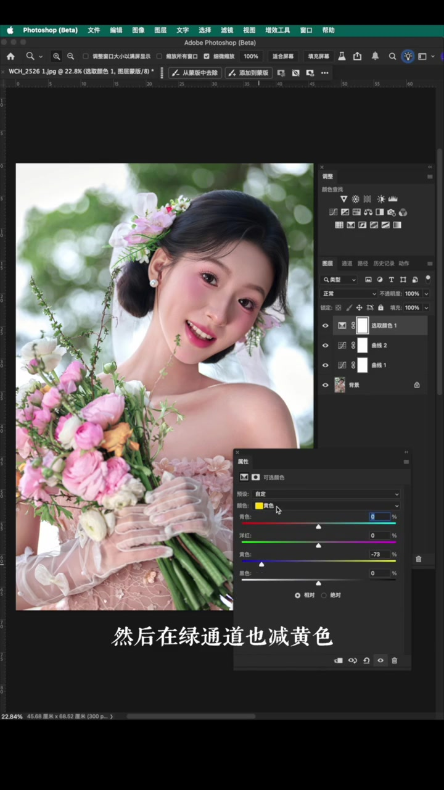
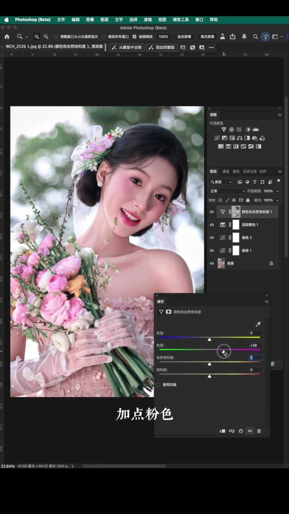
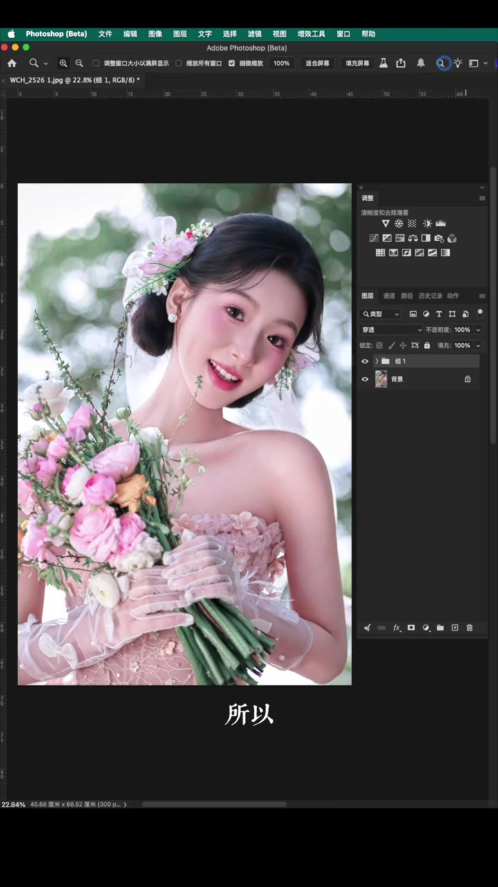

开场：客户要粉调，第一反应别是“加粉色”
视频一开头就抛出常见场景：客户想要粉调的婚纱照。很多修图师的第一反应，是不是直接往画面里加粉色？博主立刻否定——那样只会让照片又闷又脏。
“因为客户想要的不是单纯的粉色，而是整体柔和的粉色调。” （00:09–00:14）


第一步：曲线提光，把画面调通透
博主说，首先要把画面调通透。具体操作是选择曲线，先调光感——把红、绿、蓝三个通道的高光提起来，三色混合后画面就通透了很多。还要再加一点点亮度。
- 新建曲线调整层，分别进入 R/G/B 通道
- 将各通道高光端向上提拉
- 微调整体亮度

第二步：柔光曲线做“曲灰”效果
接着再做一个曲灰的效果。还是选曲线，但这次把混合模式改为柔光——这样对比度会太强烈，所以要降低不透明度。这两步合在一起，就做到了整体通透、曲灰的效果。

第三步：可选颜色，清理黄绿杂色
现在画面当中的黄跟绿显得很杂乱。博主用可选颜色：先选黄通道减黄色，再在绿通道也减黄色。这样画面就有了一种偏粉的倾向。
“这样画面就有一种偏粉的倾向了。” （00:50–00:53）

关键一步：高光选区 + 色相饱和度加粉
“关键的一步来了。”博主选取高光，用色相/饱和度工具加点粉色，再减一点色温。这样的粉调才是干净的——不是全图蒙一层粉，而是只落在高光区域。

收尾柔化与前后对比
接着给照片加点柔，用曲线提亮一点点亮度就好。然后展示“之前的”和“现在的”对比。视频最后总结：粉色婚纱照的核心，从来不是粉色本身，是画面通透、色彩统一之后的柔和色调。
“所以粉色婚纱照的核心，从来不是粉色本身，是画面通透、色彩统一之后的柔和色调。” （01:10–01:16）
